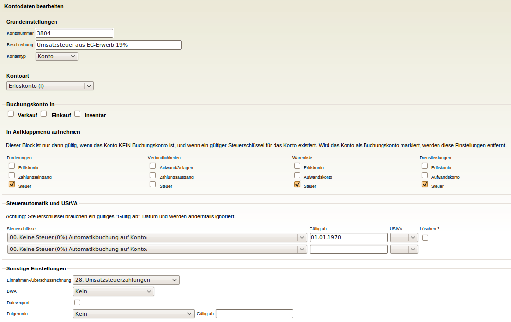

Umsatzsteuer 19% für Verkauf mit Steuerschlüssel "EU ohne USt.-IdNr.":
Die Umsatzsteuerumstellung auf 19% für SKR04 für die Steuerschlüssel "EU ohne
USt-ID Nummer" ist erst 2010 erfolgt. Das Upgradeskript erstellt automatisch
das Konto 3804 und stellt die Steuereinstellungen korrekt ein, hat der Benutzer
aber schon selber das Konto 3804 angelegt, oder gab es schon Buchungen im
Zeitraum nach dem 01.01.2007 auf das Konto 3803, wird das Upgradeskript
vorsichtshalber nicht ausgeführt, da der Benutzer sich vielleicht schon selbst
geholfen hat und mit seinen Änderungen zufrieden ist. Die korrekten
Einstellungen kann man aber auch per Hand ausführen, nachfolgend werden die
entsprechenden Schritte anhand von Screenshots dargestellt.
Für den Fall, daß Buchungen mit der Steuerschlüssel "EU ohne USt.-IdNr." nach dem
01.01.2007 erfolgt sind, ist davon auszugehen, daß diese mit dem alten
Umsatzsteuersatz von 16% gebucht worden sind, und diese Buchungen sollten
entsprechend kontrolliert werden.
Lx-Office: 3804 hinzufügen
Konto 3804 anlegen:
System -> Kontenübersicht -> Konto erfassen

Steuergruppe 13 für Konto 3803 anpassen (16%):
System -> Steuern -> bearbeiten -> Eintrag mit Steuerschlüssel 13 auswählen

Neuen Eintrag mit Steuerschlüssel 13 für Konto 3804 (19%) anlegen
System -> Steuern -> bearbeiten -> erfassen

Alle Konten, die als Steuerautomatikkonto die 3803 haben, kriegen ab 1.1.2007 auch Steuerautomatik auf 3804
Steuerschlüssel für Konto 4315 anpassen (das gleiche für 4726)
System -> Kontenübersicht -> Konten anzeigen -> 4315

Steuerliste kontrolllieren
System -> Steuern -> bearbeiten